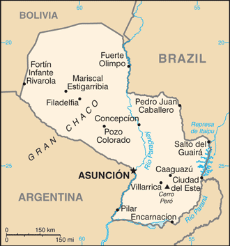
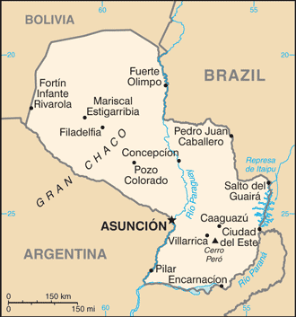

-
Introduction :: Paraguay
-
Background:Paraguay achieved its independence from Spain in 1811. In the disastrous War of the Triple Alliance (1865-70) - between Paraguay and Argentina, Brazil, and Uruguay - Paraguay lost two-thirds of its adult males and much of its territory. The country stagnated economically for the next half century. Following the Chaco War of 1932-35 with Bolivia, Paraguay gained a large part of the Chaco lowland region. The 35-year military dictatorship of Alfredo STROESSNER ended in 1989, and Paraguay has held relatively free and regular presidential elections since the country's return to democracy.PARAGUAY SUMMARY: PDF
-
Geography :: Paraguay
-
Location:Central South America, northeast of Argentina, southwest of BrazilGeographic coordinates:23 00 S, 58 00 WMap references:South AmericaArea:total: 406,752 sq kmland: 397,302 sq kmwater: 9,450 sq kmcountry comparison to the world: 61Area - comparative:about three times the size of New York state; slightly smaller than CaliforniaLand boundaries:total: 4,655 kmborder countries (3): Argentina 2531 km, Bolivia 753 km, Brazil 1371 kmCoastline:0 km (landlocked)Maritime claims:none (landlocked)Climate:subtropical to temperate; substantial rainfall in the eastern portions, becoming semiarid in the far westTerrain:grassy plains and wooded hills east of Rio Paraguay; Gran Chaco region west of Rio Paraguay mostly low, marshy plain near the river, and dry forest and thorny scrub elsewhereElevation:mean elevation: 178 melevation extremes: 46 m lowest point: junction of Rio Paraguay and Rio Parana842 highest point: Cerro PeroNatural resources:hydropower, timber, iron ore, manganese, limestoneLand use:agricultural land: 53.8% (2011 est.)arable land: 10.8% (2011 est.) / permanent crops: 0.2% (2011 est.) / permanent pasture: 42.8% (2011 est.)forest: 43.8% (2011 est.)other: 2.4% (2011 est.)Irrigated land:1,362 sq km (2012)Population distribution:most of the population resides in the eastern half of the country; to the west lies the Gran Chaco (a semi-arid lowland plain), which accounts for 60% of the land territory, but only 2% of the overall populationNatural hazards:local flooding in southeast (early September to June); poorly drained plains may become boggy (early October to June)Environment - current issues:deforestation; water pollution; rivers suffer from toxic dumping; tanneries release mercury and chromium into rivers and streams; loss of wetlands; inadequate means for waste disposal pose health risks for many urban residentsEnvironment - international agreements:party to: Biodiversity, Climate Change, Climate Change-Kyoto Protocol, Desertification, Endangered Species, Hazardous Wastes, Law of the Sea, Ozone Layer Protection, Wetlandssigned, but not ratified: none of the selected agreementsGeography - note:landlocked; lies between Argentina, Bolivia, and Brazil; population concentrated in eastern and southern part of country
-
People and Society :: Paraguay
-
Population:7,025,763 (July 2018 est.)country comparison to the world: 106Nationality:noun: Paraguayan(s)adjective: ParaguayanEthnic groups:mestizo (mixed Spanish and Amerindian) 95%, other 5%Languages:Spanish (official), Guarani (official)Religions:Roman Catholic 89.6%, Protestant 6.2%, other Christian 1.1%, other or unspecified 1.9%, none 1.1% (2002 census)Demographic profile:
Paraguay falls below the Latin American average in several socioeconomic categories, including immunization rates, potable water, sanitation, and secondary school enrollment, and has greater rates of income inequality and child and maternal mortality. Paraguay's poverty rate has declined in recent years but remains high, especially in rural areas, with more than a third of the population below the poverty line. However, the well-being of the poor in many regions has improved in terms of housing quality and access to clean water, telephone service, and electricity. The fertility rate continues to drop, declining sharply from an average 4.3 births per woman in the late 1990s to about 2 in 2013, as a result of the greater educational attainment of women, increased use of contraception, and a desire for smaller families among young women.
Paraguay is a country of emigration; it has not attracted large numbers of immigrants because of political instability, civil wars, years of dictatorship, and the greater appeal of neighboring countries. Paraguay first tried to encourage immigration in 1870 in order to rebound from the heavy death toll it suffered during the War of the Triple Alliance, but it received few European and Middle Eastern immigrants. In the 20th century, limited numbers of immigrants arrived from Lebanon, Japan, South Korea, and China, as well as Mennonites from Canada, Russia, and Mexico. Large flows of Brazilian immigrants have been arriving since the 1960s, mainly to work in agriculture. Paraguayans continue to emigrate to Argentina, Brazil, Uruguay, the United States, Italy, Spain, and France.
Age structure:0-14 years: 24.13% (male 862,803 /female 832,325)15-24 years: 18.8% (male 664,086 /female 656,947)25-54 years: 41.59% (male 1,461,657 /female 1,460,565)55-64 years: 8.13% (male 290,719 /female 280,328)65 years and over: 7.35% (male 242,783 /female 273,550) (2018 est.)population pyramid: The World Factbook Field Image ModalSouth America :: Paraguay Print
The World Factbook Field Image ModalSouth America :: Paraguay Print Image DescriptionThis is the population pyramid for Paraguay. A population pyramid illustrates the age and sex structure of a country's population and may provide insights about political and social stability, as well as economic development. The population is distributed along the horizontal axis, with males shown on the left and females on the right. The male and female populations are broken down into 5-year age groups represented as horizontal bars along the vertical axis, with the youngest age groups at the bottom and the oldest at the top. The shape of the population pyramid gradually evolves over time based on fertility, mortality, and international migration trends.
Image DescriptionThis is the population pyramid for Paraguay. A population pyramid illustrates the age and sex structure of a country's population and may provide insights about political and social stability, as well as economic development. The population is distributed along the horizontal axis, with males shown on the left and females on the right. The male and female populations are broken down into 5-year age groups represented as horizontal bars along the vertical axis, with the youngest age groups at the bottom and the oldest at the top. The shape of the population pyramid gradually evolves over time based on fertility, mortality, and international migration trends.
For additional information, please see the entry for Population pyramid on the Definitions and Notes page under the References tab.Dependency ratios:total dependency ratio: 56.6 (2015 est.)youth dependency ratio: 47.2 (2015 est.)elderly dependency ratio: 9.4 (2015 est.)potential support ratio: 10.6 (2015 est.)Median age:total: 28.7 yearsmale: 28.5 yearsfemale: 28.9 years (2018 est.)country comparison to the world: 131Population growth rate:1.17% (2018 est.)country comparison to the world: 93Birth rate:16.6 births/1,000 population (2018 est.)country comparison to the world: 107Death rate:4.8 deaths/1,000 population (2018 est.)country comparison to the world: 201Net migration rate:-0.1 migrant(s)/1,000 population (2017 est.)country comparison to the world: 106Population distribution:most of the population resides in the eastern half of the country; to the west lies the Gran Chaco (a semi-arid lowland plain), which accounts for 60% of the land territory, but only 2% of the overall populationUrbanization:urban population: 61.6% of total population (2018)rate of urbanization: 1.71% annual rate of change (2015-20 est.)Major urban areas - population:3.222 million ASUNCION (capital) (2018)Sex ratio:at birth: 1.04 male(s)/female (2017 est.)0-14 years: 1.04 male(s)/female (2017 est.)15-24 years: 1.01 male(s)/female (2017 est.)25-54 years: 1 male(s)/female (2017 est.)55-64 years: 1.04 male(s)/female (2017 est.)65 years and over: 0.88 male(s)/female (2017 est.)total population: 1.01 male(s)/female (2017 est.)Mother's mean age at first birth:22.9 years (2008 est.)note: median age at first birth among women 25-29
Maternal mortality rate:132 deaths/100,000 live births (2015 est.)country comparison to the world: 64Infant mortality rate:total: 18.1 deaths/1,000 live births (2018 est.)male: 21.4 deaths/1,000 live births (2018 est.)female: 14.7 deaths/1,000 live births (2018 est.)country comparison to the world: 86Life expectancy at birth:total population: 77.6 years (2018 est.)male: 74.9 years (2018 est.)female: 80.4 years (2018 est.)country comparison to the world: 68Total fertility rate:1.9 children born/woman (2018 est.)country comparison to the world: 132Contraceptive prevalence rate:68.4% (2016)Health expenditures:9.8% of GDP (2014)country comparison to the world: 26Physicians density:1.29 physicians/1,000 population (2012)Hospital bed density:1.3 beds/1,000 population (2011)Drinking water source:improved: urban: 100% of populationrural: 94.9% of populationtotal: 98% of populationunimproved: urban: 0% of populationrural: 5.1% of populationtotal: 2% of population (2015 est.)Sanitation facility access:improved: urban: 95.5% of population (2015 est.)rural: 78.4% of population (2015 est.)total: 88.6% of population (2015 est.)unimproved: urban: 4.5% of population (2015 est.)rural: 21.6% of population (2015 est.)total: 11.4% of population (2015 est.)HIV/AIDS - adult prevalence rate:0.5% (2017 est.)country comparison to the world: 67HIV/AIDS - people living with HIV/AIDS:20,000 (2017 est.)country comparison to the world: 84HIV/AIDS - deaths:<1000 (2016 est.)Major infectious diseases:degree of risk: intermediate (2016)food or waterborne diseases: bacterial diarrhea, hepatitis A, and typhoid fever (2016)vectorborne diseases: dengue fever (2016)note: active local transmission of Zika virus by Aedes species mosquitoes has been identified in this country (as of August 2016); it poses an important risk (a large number of cases possible) among US citizens if bitten by an infective mosquito; other less common ways to get Zika are through sex, via blood transfusion, or during pregnancy, in which the pregnant woman passes Zika virus to her fetus
Obesity - adult prevalence rate:20.3% (2016)country comparison to the world: 100Children under the age of 5 years underweight:1.3% (2016)country comparison to the world: 120Education expenditures:5% of GDP (2012)country comparison to the world: 77Literacy:definition: age 15 and over can read and write (2015 est.)total population: 95.1% (2015 est.)male: 95.8% (2015 est.)female: 94.3% (2015 est.)School life expectancy (primary to tertiary education):total: 12 years (2010)male: 12 years (2010)female: 13 years (2010)Unemployment, youth ages 15-24:total: 20.8% (2016 est.)male: 16.9% (2016 est.)female: 25.5% (2016 est.)country comparison to the world: 59 -
Government :: Paraguay
-
Country name:conventional long form: Republic of Paraguayconventional short form: Paraguaylocal long form: Republica del Paraguaylocal short form: Paraguayetymology: the precise meaning of the name Paraguay is unclear, but it seems to derive from the river of the same name; one explanation has the name meaning "water of the Payagua" (an indigenous tribe that lived along the river)Government type:presidential republicCapital:name: Asunciongeographic coordinates: 25 16 S, 57 40 Wtime difference: UTC-4 (1 hour ahead of Washington, DC, during Standard Time)daylight saving time: +1hr, begins first Sunday in October; ends last Sunday in MarchAdministrative divisions:17 departments (departamentos, singular - departamento) and 1 capital city*; Alto Paraguay, Alto Parana, Amambay, Asuncion*, Boqueron, Caaguazu, Caazapa, Canindeyu, Central, Concepcion, Cordillera, Guaira, Itapua, Misiones, Neembucu, Paraguari, Presidente Hayes, San PedroIndependence:14 May 1811 (from Spain)National holiday:Independence Day, 14-15 May (1811) (observed 15 May)Constitution:history: several previous; latest approved and promulgated 20 June 1992 (2018)amendments: proposed at the initiative of at least one-quarter of either chamber of the National Congress, by the president of the republic, or by petition of at least 30,000 voters; passage requires absolute majority vote by both chambers and approval in a referendum; amended 2011, 2014; note - in April 2017, a proposed amendment to extend presidential term limits was defeated by the lower house of the National Congress (2018)Legal system:civil law system with influences from Argentine, Spanish, Roman, and French civil law models; judicial review of legislative acts in Supreme Court of JusticeInternational law organization participation:accepts compulsory ICJ jurisdiction; accepts ICCt jurisdictionCitizenship:citizenship by birth: yescitizenship by descent only: at least one parent must be a native-born citizen of Paraguaydual citizenship recognized: yesresidency requirement for naturalization: 3 yearsSuffrage:18 years of age; universal and compulsory until the age of 75Judicial branch:highest courts: Supreme Court of Justice or Corte Suprema de Justicia (consists of 9 justices divided 3 each into the Constitutional Court, Civil and Commercial Chamber, and Criminal Division)judge selection and term of office: justices proposed by the Council of Magistrates or Consejo de la Magistratura, a 6-member independent body, and appointed by the Chamber of Senators with presidential concurrence; judges can serve until mandatory retirement at age 75subordinate courts: appellate courts; first instance courts; minor courts, including justices of the peaceExecutive branch:chief of state: President Mario Abdo BENITEZ (since 15 August 2018); Vice President Hugo Adalberto VELAZQUEZ Moreno (since 15 August 2018); note - the president is both chief of state and head of governmenthead of government: President Mario Abdo BENITEZ (since 15 August 2018); Vice President Hugo Adalberto VELAZQUEZ Moreno (since 15 August 2018)cabinet: Council of Ministers appointed by the presidentelections/appointments: president and vice president directly elected on the same ballot by simple majority popular vote for a single 5-year term; election last held on 22 April 2018 (next to be held in April 2023)election results: Mario Abdo BENITEZ elected president; percent of vote - Mario Abdo BENITEZ (ANR) 46.4%, Efrain ALEGRE (PLRA) 42.7%, Juan Bautista YBANEZ 3.3%, other 7.6%Legislative branch:description: bicameral National Congress or Congreso Nacional consists of:
Chamber of Senators or Camara de Senadores (45 seats; members directly elected in a single nationwide constituency by proportional representation vote to serve 5-year terms)
Chamber of Deputies or Camara de Diputados (80 seats; members directly elected in 18 multi-seat constituencies - corresponding to the country's 17 departments and capital city - by proportional representation vote to serve 5-year terms)elections:
Chamber of Senators - last held on 22 April 2018 (next to be held in April 2023)
Chamber of Deputies - last held on 22 April 2018 (next to be held in April 2023)election results:
Chamber of Senators - percent of vote by party/coalition - ANR 32.52%, PLRA 24.18%, FG 11.83%, PPQ 6.77%, MH 4.47%, PDP 3.66%, MCN 2.48%, UNACE 2.12%, other 11.97%; seats by party/coalition - ANR 17, PLRA 13, FG 6, PPQ 3, MH 2, PDP 2, MCN 1, UNACE 1;
Chamber of Deputies - percent of vote by party/coalition - ANR 39.1%, PLRA 17.74%, Ganar Alliance 12.08%, PPQ 4.46%, MH 3.19%; other 23.43%; seats by party/coalition - ANR 42, PLRA 17, Ganar Alliance 13, PPQ 3, MH 2, other 3Political parties and leaders:Asociacion Nacional Republicana - Colorado Party or ANR [Pedro ALLIANA]
Avanza Pais coalition or AP [Adolfo FERREIRO]
Broad Front coalition (Frente Guasu) or FG [Esperanza MARTINEZ]
Ganar Alliance (alliance between PLRA and Guasu Front)
Movimiento Cruzada Nacional or MCN
Movimiento Hagamos or MH [Antonio "Tony" APURIL]
Movimiento Union Nacional de Ciudadanos Eticos or UNACE [Jorge OVIEDO MATTO]
Partido del Movimiento al Socialismo or P-MAS [Camilo Ernesto SOARES Machado]
Partido Democratica Progresista or PDP [Rafael FILIZZOLA]
Partido Encuentro Nacional or PEN [Hermann RATZLAFFIN Klippemstein]
Partido Liberal Radical Autentico or PLRA [Efrain ALEGRE]
Partido Pais Solidario or PPS [Carlos Alberto FILIZZOLA Pallares]
Partido Popular Tekojoja or PPT [Sixto PEREIRA Galeano]
Patria Querida (Beloved Fatherland Party) or PPQ [Miguel CARRIZOSA]International organization participation:CAN (associate), CD, CELAC, FAO, G-11, G-77, IADB, IAEA, IBRD, ICAO, ICC (national committees), ICCt, ICRM, IDA, IFAD, IFC, IFRCS, ILO, IMF, IMO, Interpol, IOC, IOM, IPU, ISO (correspondent), ITSO, ITU, ITUC (NGOs), LAES, LAIA, Mercosur, MIGA, MINURSO, MINUSTAH, MONUSCO, NAM (observer), OAS, OPANAL, OPCW, Pacific Alliance (observer), PCA, UN, UNASUR, UNCTAD, UNESCO, UNFICYP, UNIDO, Union Latina, UNISFA, UNMIL, UNMISS, UNOCI, UNWTO, UPU, WCO, WHO, WIPO, WMO, WTODiplomatic representation in the US:chief of mission: Ambassador German Hugo ROJAS Irigoyen (since 28 December 2016)chancery: 2400 Massachusetts Avenue NW, Washington, DC 20008telephone: [1] (202) 483-6960 through 6962FAX: [1] (202) 234-4508consulate(s) general: Los Angeles, Miami, New YorkDiplomatic representation from the US:chief of mission: Ambassador Lee MCCLENNY (since 20 February 2018)embassy: 1776 Avenida Mariscal Lopez, Casilla Postal 402, Asuncionmailing address: Unit 4711, DPO AA 34036-0001telephone: [595] (21) 213-715FAX: [595] (21) 213-728Flag description:three equal, horizontal bands of red (top), white, and blue with an emblem centered in the white band; unusual flag in that the emblem is different on each side; the obverse (hoist side at the left) bears the national coat of arms (a yellow five-pointed star within a green wreath capped by the words REPUBLICA DEL PARAGUAY, all within two circles); the reverse (hoist side at the right) bears a circular seal of the treasury (a yellow lion below a red Cap of Liberty and the words PAZ Y JUSTICIA (Peace and Justice)); red symbolizes bravery and patriotism, white represents integrity and peace, and blue denotes liberty and generositynote: the three color bands resemble those on the flag of the Netherlands; one of only three national flags that differ on their obverse and reverse sides - the others are Moldova and Saudi Arabia
National symbol(s):lion; national colors: red, white, blueNational anthem:name: "Paraguayos, Republica o muerte!" (Paraguayans, The Republic or Death!)lyrics/music: Francisco Esteban ACUNA de Figueroa/disputednote: adopted 1934, in use since 1846; officially adopted following its re-arrangement in 1934
-
Economy :: Paraguay
-
Economy - overview:
Landlocked Paraguay has a market economy distinguished by a large informal sector, featuring re-export of imported consumer goods to neighboring countries, as well as the activities of thousands of microenterprises and urban street vendors. A large percentage of the population, especially in rural areas, derives its living from agricultural activity, often on a subsistence basis. Because of the importance of the informal sector, accurate economic measures are difficult to obtain.
On a per capita basis, real income has grown steadily over the past five years as strong world demand for commodities, combined with high prices and favorable weather, supported Paraguay's commodity-based export expansion. Paraguay is the fifth largest soy producer in the world. Drought hit in 2008, reducing agricultural exports and slowing the economy even before the onset of the global recession. The economy fell 3.8% in 2009, as lower world demand and commodity prices caused exports to contract. Severe drought and outbreaks of hoof-and-mouth disease in 2012 led to a brief drop in beef and other agricultural exports. Since 2014, however, Paraguay’s economy has grown at a 4% average annual rate due to strong production and high global prices, at a time when other countries in the region have contracted.
The Paraguayan Government recognizes the need to diversify its economy and has taken steps in recent years to do so. In addition to looking for new commodity markets in the Middle East and Europe, Paraguayan officials have promoted the country’s low labor costs, cheap energy from its massive Itaipu Hydroelectric Dam, and single-digit tax rate on foreign firms. As a result, the number of factories operating in the country – mostly transplants from Brazil - has tripled since 2014.
Corruption, limited progress on structural reform, and deficient infrastructure are the main obstacles to long-term growth. Judicial corruption is endemic and is seen as the greatest barrier to attracting more foreign investment. Paraguay has been adverse to public debt throughout its history, but has recently sought to finance infrastructure improvements to attract foreign investment.
GDP (purchasing power parity):$88.91 billion (2017 est.)$84.87 billion (2016 est.)$81.36 billion (2015 est.)note: data are in 2017 dollars
country comparison to the world: 91GDP (official exchange rate):$38.94 billion (2017 est.) (2017 est.)GDP - real growth rate:4.8% (2017 est.)4.3% (2016 est.)3.1% (2015 est.)country comparison to the world: 58GDP - per capita (PPP):$12,800 (2017 est.)$12,400 (2016 est.)$12,000 (2015 est.)note: data are in 2017 dollars
country comparison to the world: 123Gross national saving:18.6% of GDP (2017 est.)20.9% of GDP (2016 est.)20% of GDP (2015 est.)country comparison to the world: 108GDP - composition, by end use:household consumption: 66.7% (2017 est.)government consumption: 11.3% (2017 est.)investment in fixed capital: 17.3% (2017 est.)investment in inventories: 0.3% (2017 est.)exports of goods and services: 46.6% (2017 est.)imports of goods and services: -42.2% (2017 est.)GDP - composition, by sector of origin:agriculture: 17.9% (2017 est.)industry: 27.7% (2017 est.)services: 54.5% (2017 est.)Agriculture - products:cotton, sugarcane, soybeans, corn, wheat, tobacco, cassava (manioc, tapioca), fruits, vegetables; beef, pork, eggs, milk; timberIndustries:sugar processing, cement, textiles, beverages, wood products, steel, base metals, electric powerIndustrial production growth rate:2% (2017 est.)country comparison to the world: 132Labor force:3.428 million (2017 est.)country comparison to the world: 101Labor force - by occupation:agriculture: 26.5%industry: 18.5%services: 55% (2008)Unemployment rate:5.7% (2017 est.)6% (2016 est.)country comparison to the world: 85Population below poverty line:22.2% (2015 est.)Distribution of family income - Gini index:51.7 (2014)53.2 (2009)country comparison to the world: 11Budget:revenues: 5.524 billion (2017 est.)expenditures: 5.968 billion (2017 est.)Taxes and other revenues:14.2% (of GDP) (2017 est.)country comparison to the world: 202Budget surplus (+) or deficit (-):-1.1% (of GDP) (2017 est.)country comparison to the world: 84Public debt:19.5% of GDP (2017 est.)18.9% of GDP (2016 est.)country comparison to the world: 191Fiscal year:calendar yearInflation rate (consumer prices):3.6% (2017 est.)4.1% (2016 est.)country comparison to the world: 144Central bank discount rate:5.5% (31 December 2012)6% (31 December 2011)country comparison to the world: 76Commercial bank prime lending rate:17% (31 December 2017 est.)18.08% (31 December 2016 est.)country comparison to the world: 28Stock of narrow money:$5.117 billion (31 December 2017 est.)$4.307 billion (31 December 2016 est.)country comparison to the world: 103Stock of broad money:$5.117 billion (31 December 2017 est.)$4.307 billion (31 December 2016 est.)country comparison to the world: 106Stock of domestic credit:$12.91 billion (31 December 2017 est.)$12.18 billion (31 December 2016 est.)country comparison to the world: 104Current account balance:-$298 million (2017 est.)$416 million (2016 est.)country comparison to the world: 104Exports:$11.73 billion (2017 est.)$10.86 billion (2016 est.)country comparison to the world: 85Exports - partners:Brazil 31.9%, Argentina 15.9%, Chile 6.9%, Russia 5.9% (2017)Exports - commodities:soybeans, livestock feed, cotton, meat, edible oils, wood, leather, goldImports:$11.35 billion (2017 est.)$9.617 billion (2016 est.)country comparison to the world: 97Imports - commodities:road vehicles, consumer goods, tobacco, petroleum products, electrical machinery, tractors, chemicals, vehicle partsImports - partners:China 31.3%, Brazil 23.4%, Argentina 12.9%, US 7.4% (2017)Reserves of foreign exchange and gold:$7.877 billion (31 December 2017 est.)$6.881 billion (31 December 2016 est.)country comparison to the world: 79Debt - external:$17.7 billion (31 December 2017 est.)$16.48 billion (31 December 2016 est.)country comparison to the world: 96Stock of direct foreign investment - at home:$6.235 billion (31 December 2017 est.)$5.276 billion (31 December 2016 est.)country comparison to the world: 103Stock of direct foreign investment - abroad:$705.1 million (31 December 2017 est.)$591.3 million (31 December 2016 est.)country comparison to the world: 92Exchange rates:guarani (PYG) per US dollar -5,628.1 (2017 est.)5,680.7 (2016 est.)5,680.7 (2015 est.)5,160.4 (2014 est.)4,462.2 (2013 est.) -
Energy :: Paraguay
-
Electricity access:population without electricity: 100,000 (2013)electrification - total population: 98% (2013)electrification - urban areas: 99% (2013)electrification - rural areas: 96% (2013)Electricity - production:63.13 billion kWh (2016 est.)country comparison to the world: 45Electricity - consumption:10.9 billion kWh (2016 est.)country comparison to the world: 92Electricity - exports:41.13 billion kWh (2015 est.)country comparison to the world: 4Electricity - imports:0 kWh (2016 est.)country comparison to the world: 185Electricity - installed generating capacity:8.87 million kW (2016 est.)country comparison to the world: 65Electricity - from fossil fuels:0% of total installed capacity (2016 est.)country comparison to the world: 214Electricity - from nuclear fuels:0% of total installed capacity (2017 est.)country comparison to the world: 163Electricity - from hydroelectric plants:99% of total installed capacity (2017 est.)country comparison to the world: 3Electricity - from other renewable sources:1% of total installed capacity (2017 est.)country comparison to the world: 162Crude oil - production:0 bbl/day (2017 est.)country comparison to the world: 185Crude oil - exports:0 bbl/day (2015 est.)country comparison to the world: 179Crude oil - imports:0 bbl/day (2015 est.)country comparison to the world: 181Crude oil - proved reserves:0 bbl (1 January 2018 est.)country comparison to the world: 181Refined petroleum products - production:0 bbl/day (2015 est.)country comparison to the world: 189Refined petroleum products - consumption:43,000 bbl/day (2016 est.)country comparison to the world: 112Refined petroleum products - exports:0 bbl/day (2015 est.)country comparison to the world: 191Refined petroleum products - imports:40,760 bbl/day (2015 est.)country comparison to the world: 89Natural gas - production:0 cu m (2017 est.)country comparison to the world: 183Natural gas - consumption:0 cu m (2017 est.)country comparison to the world: 187Natural gas - exports:0 cu m (2017 est.)country comparison to the world: 167Natural gas - imports:0 cu m (2017 est.)country comparison to the world: 173Natural gas - proved reserves:0 cu m (1 January 2014 est.)country comparison to the world: 181Carbon dioxide emissions from consumption of energy:7.74 million Mt (2017 est.)country comparison to the world: 117
-
Communications :: Paraguay
-
Telephones - fixed lines:total subscriptions: 290,109 (2017 est.)subscriptions per 100 inhabitants: 4 (2017 est.)country comparison to the world: 116Telephones - mobile cellular:total subscriptions: 7,468,275 (2017 est.)subscriptions per 100 inhabitants: 108 (2017 est.)country comparison to the world: 102Telephone system:general assessment: the fixed-line market is a state monopoly and fixed-line telephone service is meager; principal switching center is in Asuncion (2016)domestic: deficiencies in provision of fixed-line service have resulted in a rapid expansion of mobile-cellular services fostered by competition among multiple providers; Internet market also open to competition (2016)international: country code - 595; satellite earth station - 1 Intelsat (Atlantic Ocean) (2016)Broadcast media:6 privately owned TV stations; about 75 commercial and community radio stations; 1 state-owned radio network (2010)Internet country code:.pyInternet users:total: 3,524,045 (July 2016 est.)percent of population: 51.3% (July 2016 est.)country comparison to the world: 93Broadband - fixed subscriptions:total: 278,169 (2017 est.)subscriptions per 100 inhabitants: 4 (2017 est.)country comparison to the world: 99
-
Transportation :: Paraguay
-
National air transport system:number of registered air carriers: 1 (2015)inventory of registered aircraft operated by air carriers: 5 (2015)annual passenger traffic on registered air carriers: 452,004 (2015)annual freight traffic on registered air carriers: 1,641,624 mt-km (2015)Civil aircraft registration country code prefix:ZP (2016)Airports:799 (2013)country comparison to the world: 9Airports - with paved runways:total: 15 (2017)over 3,047 m: 3 (2017)1,524 to 2,437 m: 7 (2017)914 to 1,523 m: 5 (2017)Airports - with unpaved runways:total: 784 (2013)1,524 to 2,437 m: 23 (2013)914 to 1,523 m: 290 (2013)under 914 m: 471 (2013)Railways:total: 30 km (2014)standard gauge: 30 km 1.435-m gauge (2014)country comparison to the world: 133Roadways:total: 32,059 km (2010)paved: 4,860 km (2010)unpaved: 27,199 km (2010)country comparison to the world: 95Waterways:3,100 km (primarily on the Paraguay and Paraná River systems) (2012)country comparison to the world: 32Merchant marine:total: 78by type: container ship 3, general cargo 22, oil tanker 6, other 47
note: as of 2017, Paraguay registered 2,012 fluvial vessels of which 1,741 were commercial barges
country comparison to the world: 99Ports and terminals:river port(s): Asuncion, Villeta, San Antonio, Encarnacion (Parana) -
Military and Security :: Paraguay
-
Military expenditures:1.25% of GDP (2016)1.42% of GDP (2015)1.29% of GDP (2014)1.28% of GDP (2013)1.3% of GDP (2012)country comparison to the world: 92Military branches:Armed Forces Command (Commando de las Fuerzas Militares): Army, National Navy (Armada Nacional, includes Marine Corps, Naval Aviation, and Coast Guard), Paraguayan Air Force (Fuerza Aerea Paraguay, FAP), Logistics Command, War Materiel Directorate (2012)Military service age and obligation:18 years of age for compulsory and voluntary military service; conscript service obligation is 12 months for Army, 24 months for Navy; volunteers for the Air Force must be younger than 22 years of age with a secondary school diploma (2012)
-
Transnational Issues :: Paraguay
-
Disputes - international:unruly region at convergence of Argentina-Brazil-Paraguay borders is locus of money laundering, smuggling, arms and illegal narcotics trafficking, and fundraising for violent extremist organizationsIllicit drugs:major illicit producer of cannabis, most or all of which is consumed in Brazil, Argentina, and Chile; transshipment country for Andean cocaine headed for Brazil, other Southern Cone markets, and Europe; weak border controls, extensive corruption and money-laundering activity, especially in the Tri-Border Area; weak anti-money-laundering laws and enforcement
South America ::
Paraguay